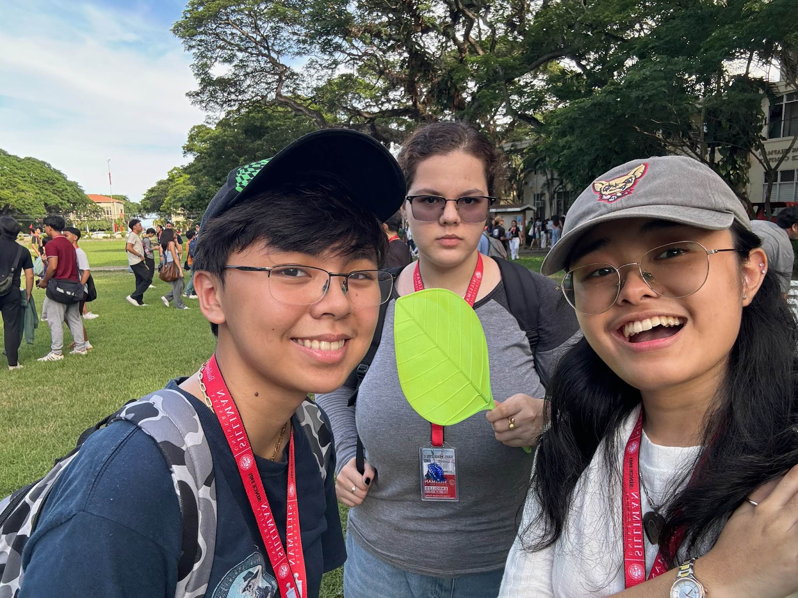

Role: Participant
The Freshie Walk was an event that occured in the SU Campus from 12:45-5:00 PM that gave freshmen a chance to walk with peers around
Silliman University’s campus. It started near the gym and ended at the amphitheatre, with each college’s
student body following one after another, with various activities being hosted at the amphitheatre as
everyone mingled. Being a freshman, I attended this event as a participant with the rest of my
classmates.
I had honestly expected the event to be a lot shorter than it was, perhaps lasting an hour or
two at
most, but it lasted for the whole afternoon. It was not bad at all, though, as it gave me the
opportunity to
reconnect with friends, of which many I had not seen in months due to the summer break. I was happy to
see
all the different cheers and performances from each college, and even participated in my own college’s
cheer. I liked the time I got to spend with my friends, new and old.
This activity allowed me to get comfortable with my new social environment as I was able to
scope
out the types of people present in each department, including my own. It was tiring at times, but it
also
taught me that fun can still be had even during times of mild exhaustion.
Because of this activity, I have more courage in going out and meeting new people, and I am more
comfortable in my environment.

×